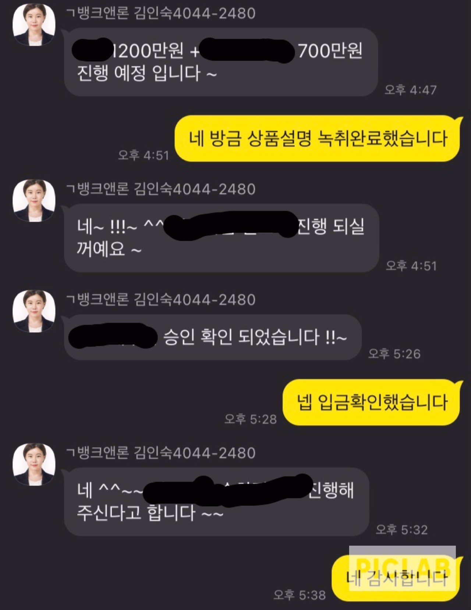

[개인회생자대출] 김인숙 과장님 감사합니다
직군 : 직장인
재직기간 : 5년
월소득 : 350
신용 : 개인회생 인가
기대출 : 신용 500/차량담보 700
미납 2.9에 월 변제가 290만원이라 폐지에 대한 부담감과 생활비로 인해 어려운 상황에 이전에 대출받았던 뱅크앤론에 다시 연락하였습니다.
다행이도 미납금해결과 차량담보대환+생활자금까지 넉넉하게 승인이 되어 마음을 놓을수 있었습니다.
도와주신 김인숙 과장님 감사합니다.
